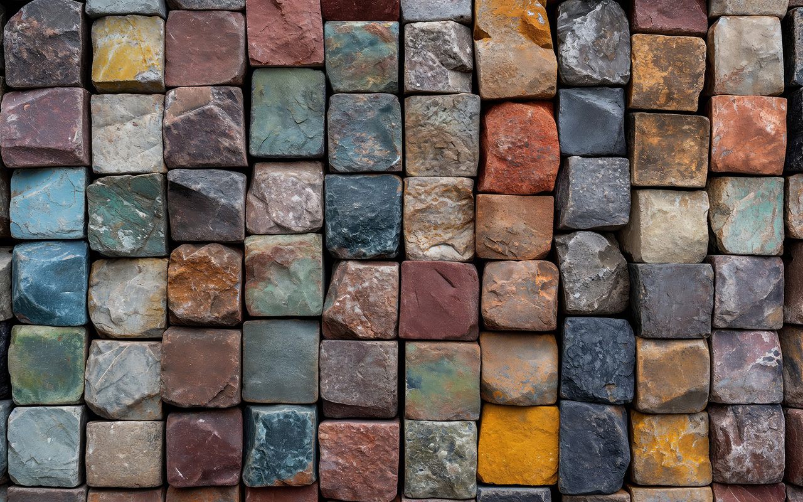
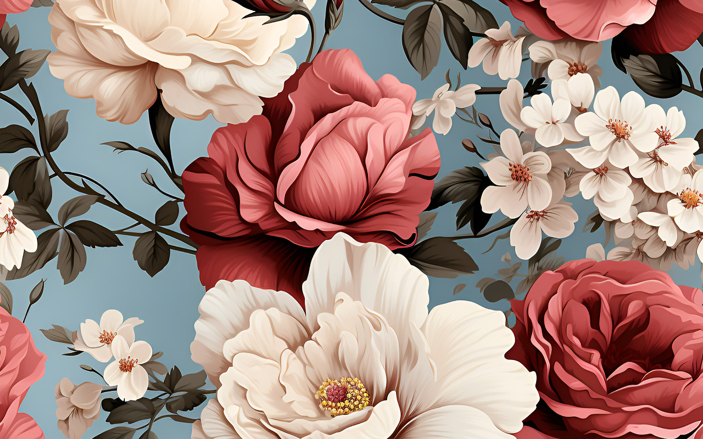
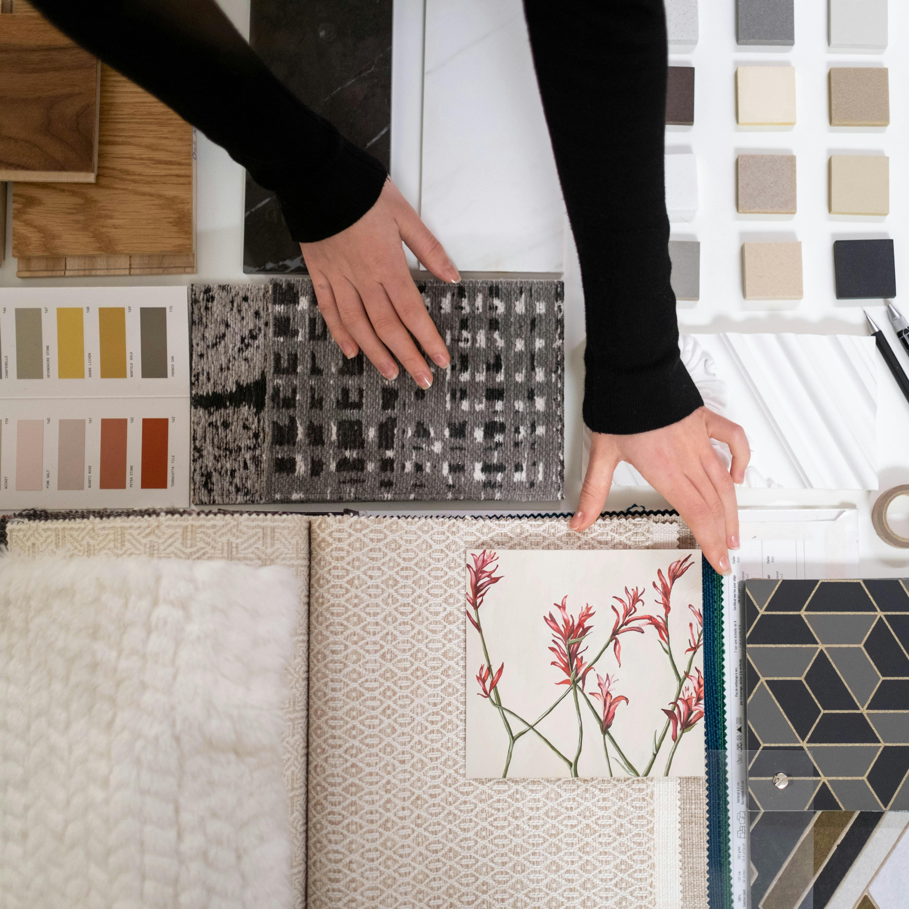

Tule hakemaan meiltä värit elämääsi!
Meillä Kotkantien maalaus- ja tapetontipalveluissa jokainen henkilökuntamme jäsen on laadukkaiden maalaus- ja tapetointipalveluiden erityisosaaja. Ammattitaitoiset maalarimme ovat toteuttaneet lukuisia onnistuneita projekteja niin yksityis- kuin yritysasiakkaillemme. Olipa kyseessä kodin päivittäminen, uuden asunnon sisustaminen tai toimitilojen remontointi, meiltä löydät ihan takuuvarmasti elämääsi uudet värit.

Miksi valita meidät?
- Kokemus: Meillä on laaja kokemus erilaisista pinnoista ja tiloista. Tiedämme, miten eri materiaalit käyttäytyvät ja miten saavutetaan kestävä lopputulos.
- Laatu: Käytämme vain korkealaatuisia maaleja ja tapetteja, jotka takaavat kauniin ja pitkäikäisen pinnan.
- Ammattitaito: Meillä työskentelevät kokeneet ja ammattitaitoiset maalari, jotka pitävät huolen siitä, että työ tehdään huolellisesti ja sovitussa ajassa.
- Asiakaspalvelu: Meille asiakastyytyväisyys on tärkeintä. Kuuntelemme toiveitasi ja neuvomme mielellämme materiaalien valinnassa ja suunnittelussa.
- Ympäristötietoisuus: Pyrimme minimoimaan ympäristövaikutuksemme käyttämällä ympäristöystävällisiä materiaaleja ja menetelmiä.

Ota yhteyttä!
Tule rohkeasti jututtamaan asiantuntijoitamme!
Haluamme tehdä remontistasi mahdollisimman miellyttävän kokemuksen. Ota yhteyttä meihin yhteydenottolomakkeella, sähköpostilla tai puhelimella, niin keskustellaan projektistasi tarkemmin. Teemme sinulle mielellämme maksuttoman tarjouksen.